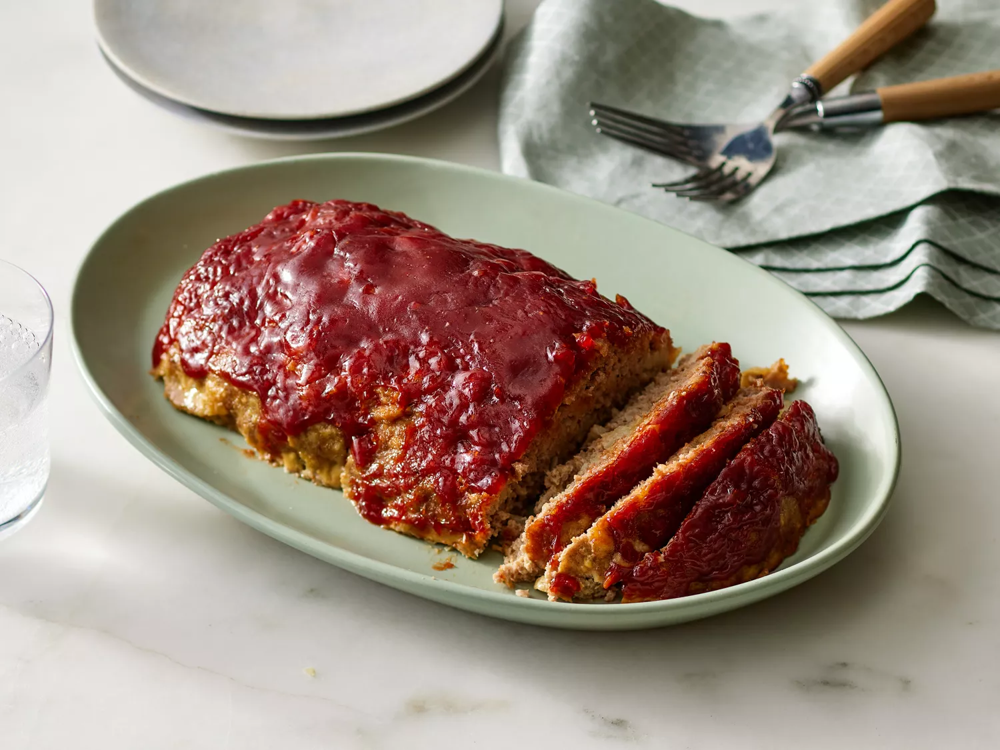

Turkey Meatloaf

Best Turkey Meatloaf
A favorite. The turkey meatloaf always comes our moist, tender, and full of flavour. It can also be topped with a glaze of delicious ketchup.
Ingredients
Meatloaf:
- 11/2 pounds ground turkey
- 3/4 cup crushed buttery round crackers
- 1/2 cup milk
- 1 small onion, chopped
- 1 large egg
- 2 cloves garlic, minced
- 11/2 teaspoons salt
- 1/4 teaspoon ground black pepper
Glaze:
- 1/2 cup ketchup
- 1/4 cup brown sugar
- 1 tablespoon Worcestershire sauce
Steps
- Gather all ingredients.
- Preheat oven to 350 degrees F (175 degrees C). Lightly grease a rimmed baking sheet.
- Mix ground turkey, crushed crackers, milk, onion, egg, garlic, salt, and black pepper in a bowl. Shape mixture into a loaf and place on the prepared pan.
- To make the glaze: Mix ketchup, brown sugar, and Worcestershire sauce in a bowl. Set aside.
- Bake meatloaf in preheated oven for 30 minutes; remove from the oven and drain off liquids. Top meatloaf with prepared ketchup glaze.
- Return loaf to the oven and continue baking until no longer pink in the center, about 30 minutes more; an instant-read thermometer inserted into the center should read at least 160 degrees F (71 degrees C).
- Serve and enjoy!